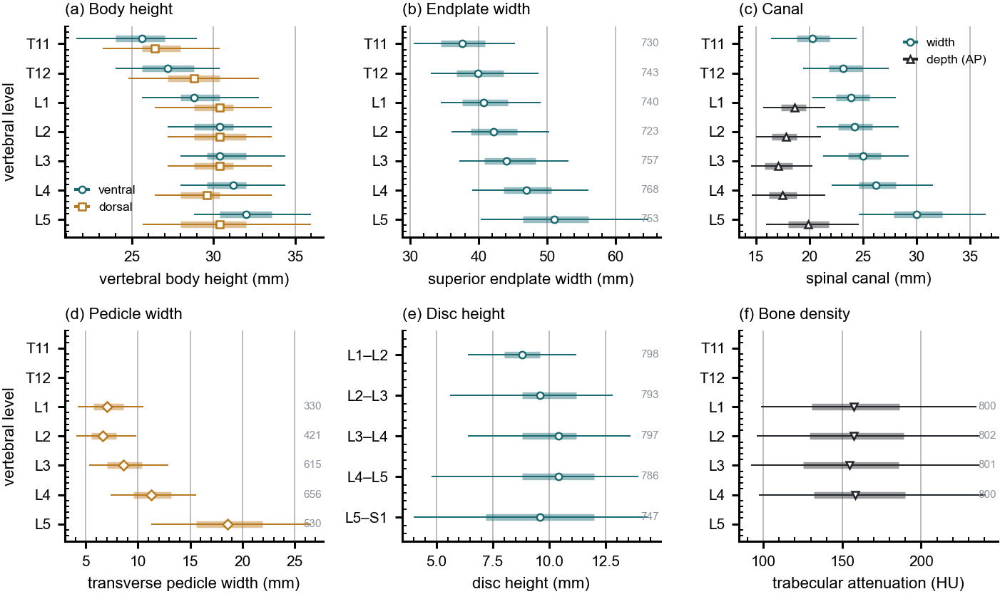

The figures a surgeon consults for vertebral body height, canal dimensions and pedicle
width come from cadaveric series of a few dozen specimens, plotted as a single line
per measurement with no indication of spread. They are good numbers. What they cannot
tell you is whether the patient in front of you is unusual, because they never show
what usual looks like.
These are the same measurements from 802 CT records, in the same
axes — level on the vertical, measurement on the horizontal — so the two
can be laid side by side. Every row carries its median, its interquartile range, its
5th–95th percentile, and its own n.

Marker, median; bar, interquartile range; line, 5th–95th percentile; the
number at the right of a row is its n. Coverage is not uniform and is drawn
rather than assumed: canal depth and pedicle width rest on 330–656 records
because they need an axial extent many field-limited series do not carry, while the
remaining measures rest on 720–784.
What these numbers are, and what they are not.
This is a screening cohort aged 50 and over, scanned supine, measured automatically
from segmentations. Posture matters for anything postural, age matters for bone, and
an automatic measurement is not a radiologist. So this describes that population. It
is not a normative atlas of the healthy adult spine, and it should not be
used as one. No comparison between levels is tested here and none is implied —
the intervals are dispersion, not inference.
The values
Generated from the same file the figure is drawn from, so the table and the plot
cannot disagree.
Vertebral body height, ventral (mm)
Level
n
Median
IQR
5th–95th
Mean ± SD
T11
731
25.60
24.00–27.00
21.60–29.00
25.30 ± 2.48
T12
744
27.20
25.60–28.80
24.00–30.40
27.16 ± 2.25
L1
740
28.80
28.00–30.40
25.60–32.80
29.18 ± 2.80
L2
722
30.40
28.80–31.20
27.20–33.60
30.19 ± 2.40
L3
757
30.40
29.60–32.00
28.00–34.40
30.85 ± 2.12
L4
772
31.20
29.60–32.00
28.00–34.40
30.95 ± 2.20
L5
764
32.00
30.40–33.60
28.80–36.00
32.00 ± 2.64
Vertebral body height, dorsal (mm)
Level
n
Median
IQR
5th–95th
Mean ± SD
T11
731
26.40
25.60–28.00
23.20–30.40
26.82 ± 2.41
T12
744
28.80
27.20–30.40
24.80–32.80
28.65 ± 2.35
L1
739
30.40
28.80–31.20
26.40–33.60
30.14 ± 2.52
L2
721
30.40
28.80–32.00
27.20–33.60
30.31 ± 2.07
L3
757
30.40
28.80–31.20
27.20–33.60
30.09 ± 2.04
L4
771
29.60
28.00–30.40
26.40–33.60
29.46 ± 2.14
L5
763
30.40
28.00–32.00
25.64–36.00
30.38 ± 3.29
Superior endplate width (mm)
Level
n
Median
IQR
5th–95th
Mean ± SD
T11
730
37.60
34.50–40.90
30.55–45.31
37.75 ± 4.67
T12
743
39.90
36.80–43.70
33.00–48.70
40.27 ± 4.97
L1
740
40.70
37.60–44.30
34.50–49.10
40.96 ± 4.72
L2
723
42.20
38.90–45.60
36.10–50.30
42.39 ± 4.58
L3
757
44.10
40.80–48.30
37.20–53.10
44.61 ± 5.19
L4
768
47.00
43.70–50.60
39.10–56.00
47.05 ± 5.61
L5
753
51.00
46.50–56.00
40.36–64.80
51.42 ± 8.13
Spinal canal width (mm)
Level
n
Median
IQR
5th–95th
Mean ± SD
T11
737
20.30
18.80–21.90
16.40–24.42
20.36 ± 2.46
T12
742
23.15
21.80–24.98
19.40–27.40
23.28 ± 2.47
L1
741
23.90
22.50–25.60
20.30–28.10
24.11 ± 2.46
L2
730
24.20
22.70–25.88
20.70–28.35
24.36 ± 2.40
L3
771
25.00
23.60–26.70
21.30–29.30
25.19 ± 2.61
L4
784
26.20
24.60–28.10
22.10–31.58
26.44 ± 3.02
L5
761
30.00
27.90–32.40
24.60–36.50
30.27 ± 3.75
Spinal canal depth (AP) (mm)
Level
n
Median
IQR
5th–95th
Mean ± SD
L1
324
18.60
17.38–19.70
15.70–21.48
18.54 ± 1.75
L2
421
17.80
16.50–18.80
15.00–21.10
17.85 ± 1.79
L3
612
17.10
15.80–18.40
14.55–20.30
17.13 ± 1.79
L4
651
17.50
16.20–18.80
14.65–21.50
17.60 ± 2.20
L5
517
19.90
18.00–21.80
15.98–24.62
20.03 ± 2.78
Transverse pedicle width (mm)
Level
n
Median
IQR
5th–95th
Mean ± SD
L1
330
7.00
5.70–8.57
4.25–10.50
7.18 ± 1.97
L2
421
6.60
5.50–7.90
4.10–9.80
6.81 ± 1.88
L3
615
8.60
7.00–10.35
5.30–12.93
8.76 ± 2.39
L4
656
11.30
9.57–13.20
7.35–15.60
11.44 ± 2.63
L5
530
18.60
15.60–21.90
11.25–26.60
18.82 ± 4.68
Disc height (mm)
Level
n
Median
IQR
5th–95th
Mean ± SD
L1–L2
798
8.80
8.00–9.60
6.40–11.20
8.88 ± 1.62
L2–L3
793
9.60
8.80–11.20
5.60–12.80
9.74 ± 2.14
L3–L4
797
10.40
8.80–11.20
6.40–13.60
10.19 ± 2.11
L4–L5
786
10.40
8.80–12.00
4.80–13.95
10.20 ± 2.57
L5–S1
747
9.60
7.20–12.00
4.00–14.40
9.53 ± 3.33
Trabecular attenuation (HU)
Level
n
Median
IQR
5th–95th
Mean ± SD
L1
800
157.20
130.47–186.10
98.52–235.11
160.47 ± 42.47
L2
802
157.30
129.50–189.10
95.91–237.57
161.00 ± 43.33
L3
801
154.40
125.20–185.70
92.20–236.90
157.92 ± 44.11
L4
800
158.40
132.20–189.80
97.18–241.05
163.50 ± 44.98
Two checks worth noting.
Body height crosses over — dorsal exceeds ventral at T11–T12 and the
order reverses by L4–L5 — and pedicle width widens steeply into the lower
lumbar spine. Both are properties the classical figures report, recovered here
independently from CT. Panel (f) is a substitution rather than a reproduction: the
textbook plots vertebral compression strength measured by loading cadaveric specimens
to failure, and trabecular attenuation is a different quantity that stands in for it
in living patients.